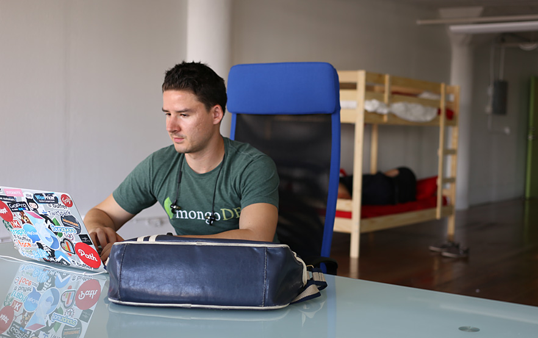
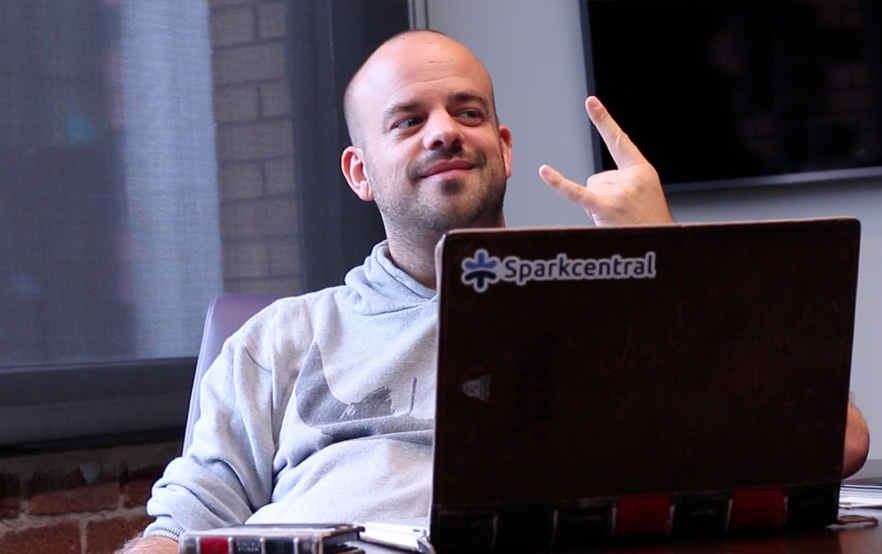
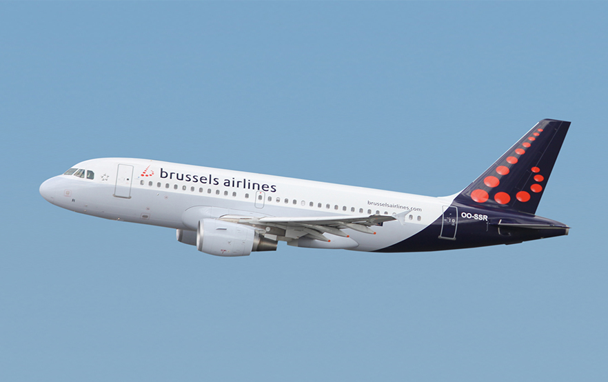

Buffer
Joel Gascoigne first launched Buffer in the U.K., but has since expanded exponentially helping people schedule great content for sharing on social media.
View Case Study!UberMedia
Founded in 2010, UberMedia is the leading independent developer of dynamic advertising solutions and feature-rich mobile applications.
View Case Study!Mailbox

Take a look at how Heath and Liz at Mailbox use Sparkcentral for social media customer service to manage inbound messages and support their users who read and archive millions of emails per day.
View Case Study!Delta
Delta airlines has adapted to customer's needs by growing out their service to include over 300 destinations in over 65 countries. They've also been listening and serving their customers over social media with Sparkcentral.
Watch Case Study!Media Temple
Since Media Temple began in 1998, they have been on a mission to help web developers, designers, digital entrepreneurs, and innovators bring their ideas to life online.
View Case Study!Mobile Vikings
Co-founded in 2008 by Frank Bekkers, Mobile Vikings is a mobile virtual network (an MVNO) – which purchases bulk access to network services at wholesale rates, passing along savings to its users (Vikings!) – based in Belgium.
View Case Study!Brussels Airlines
Kim Daenen handles the social media for Brussels Airlines, the largest airline in Belgium, operating to over 65 destinations in 20 European countries.
View Case Study!Lyft
Zach Cole and Emily Castor head up social customer service at Lyft, the ride-sharing app that's sweeping the nation. (And streets!) Lyft's dedication to making every pink mustache smile has landed them in 18 cities across the nation.
View Case Study!

“Customer experience doesn’t begin and end with a flight. It’s an ongoing conversation between friends.”

“Our customers live life to the fullest. With Sparkcentral, we’re able to give our customers an experience every time they connect with us.”
“Distance may divide us, but communication channels connect us. With Sparkcentral, we are there at every stage of the journey with our customers.”

“We love it when our customers contact us and we can have personalized conversations with them.”

“Sparkcentral’s service-first approach means we can deliver a seamless experience for our customers anytime and anywhere, so they never feel far from the Lyft community.”

“Whether customers contact us on mobile, social or any other device, we want them to experience the same great customer service they would receive if they walked into one of our stores.”

“At Nordstrom, our customer service standards are exceptionally high. Thanks to Sparkcentral, we’re able to deliver the kind of highly-personalized customer service that our customers expect and deserve.”

“In this hyper-connected, fast-paced world, our customers want to know we are there for them. Sparkcentral enables us to interact real-time.”

"Rapid response, shorter handle times and happy agents and customers are a result of a platform focused on customer service."

“At Emirates, we promise to give our customers a great travel experience, and Sparkcentral has helped us deliver on that promise.”

“Uber’s success has come from the way we deliver the customer experience.”

“With a 24/7 business like Buffer, our customers need to know they can count on us day and night. As our customers’ needs change, it’s nice to know that Sparkcentral is right there along side us.”

“At Men’s Wearhouse, we have a long tradition of providing great value and service for our customers. Sparkcentral enables us to keep that tradition.”

“At Dropbox, we value people. Whether it’s the team in our office or the customers we communicate with every day, we realize that happy employees and happy customers are the key to our success.”

“The fact that we don’t have a brick and mortar shop means we have to work extra hard to create a great customer experience. Thanks to Sparkcentral and our team of dedicated “Vikings”, our customers love us.”